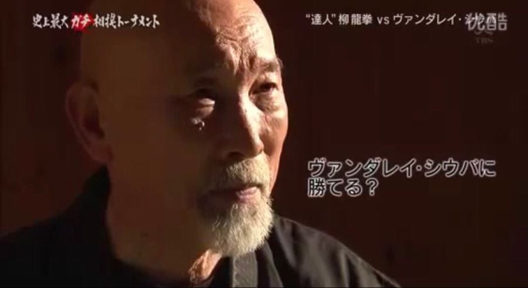
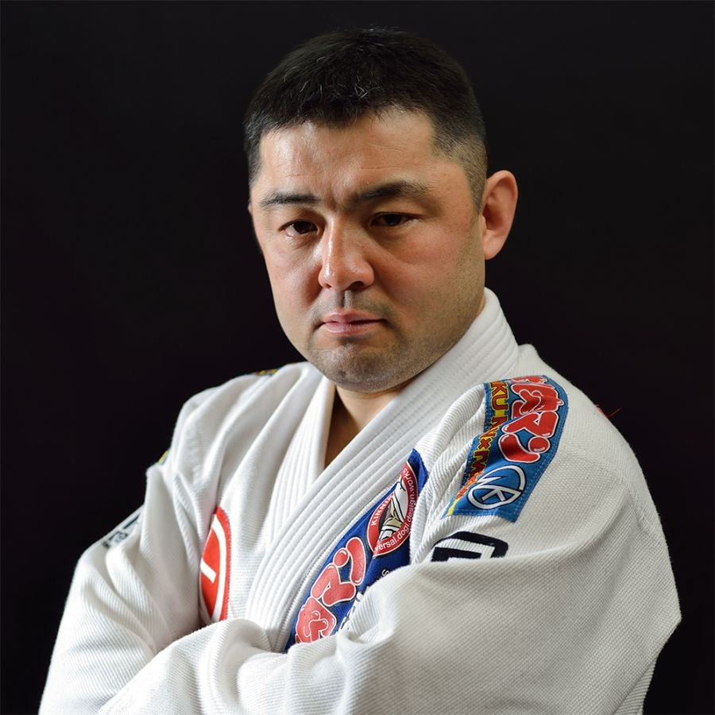
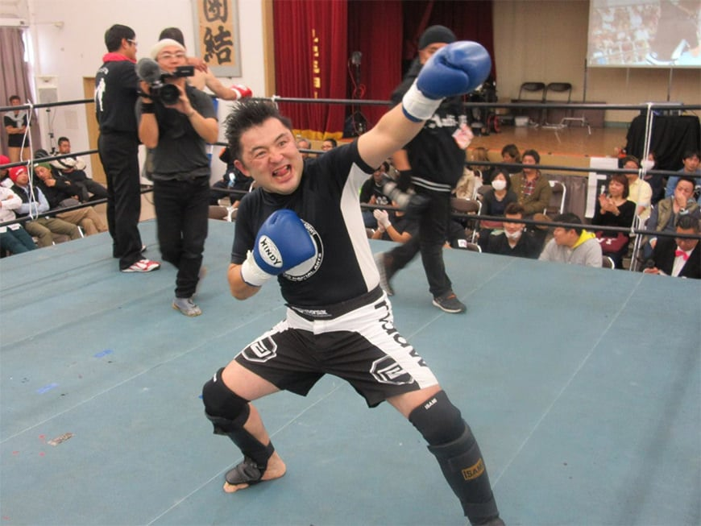
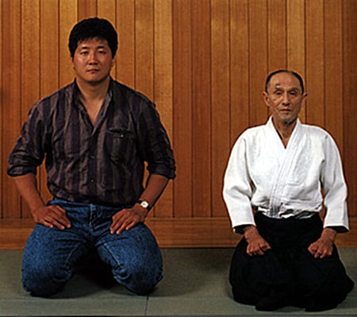
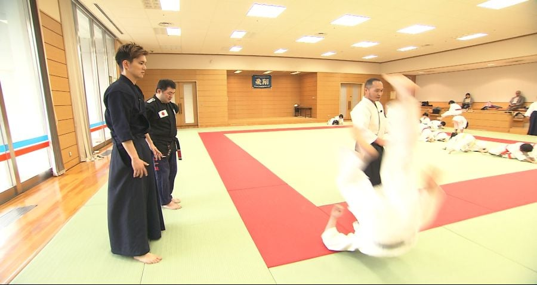
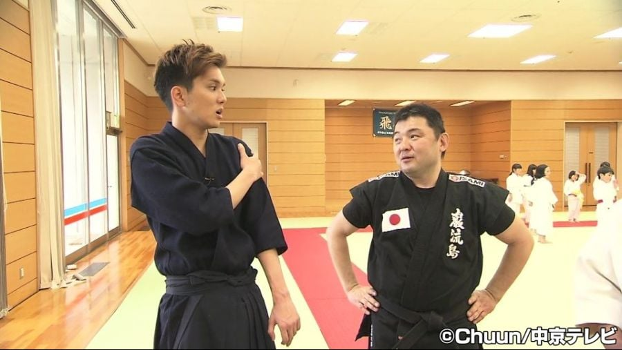
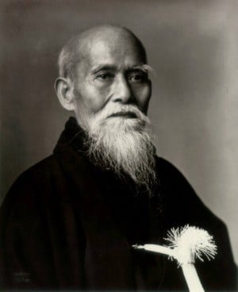
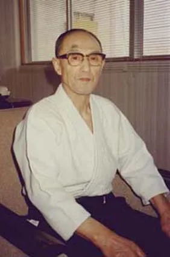
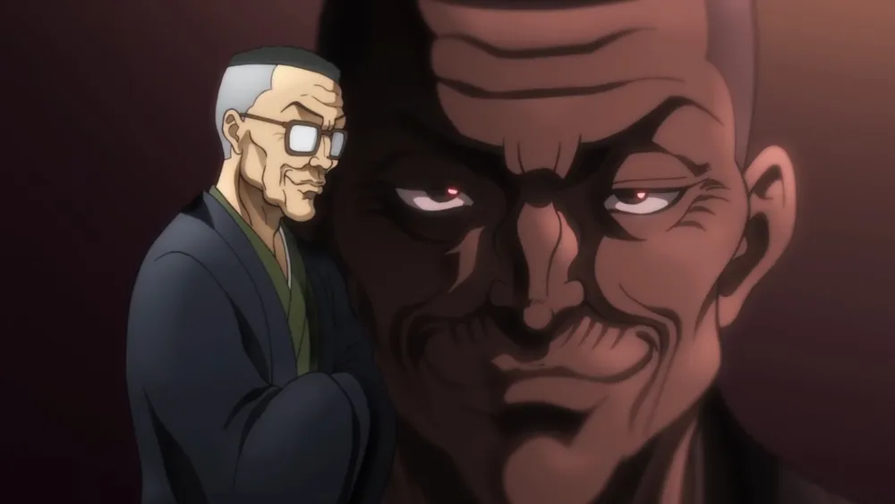
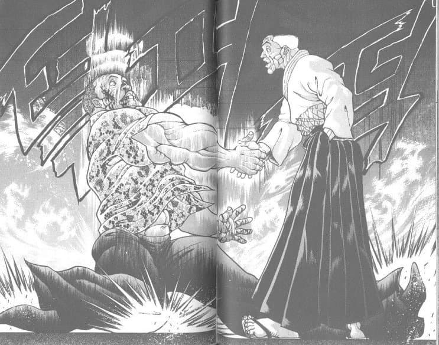

전설의 무술가 야나기 류켄은
이렇게 손도 안대고 상대방을 쓰러트리는 엄청난 기공 무술을
사용했는데
무려 그의 전적은 200전 무패


이를 본 격투기 선수였던 이와쿠라 츠요시는
아무리봐도 사기라면서
그에게 정식으로 대결을 신청한다
그리고
200전 무패의 기록이 깨지며 개처맞고 병원에 실려갔다

그리고 그는 그렇게 사기꾼들을 도장깨기 하며 다니다가
무술의 달인이라고 불리우는 시오다 고조의 영상을 보고 저건 아무리봐도 사기다라고 생각해 그의 세미나장에 방문하여 대결을 신청한다.


그리고 그는 첫번째 주먹을 뻣자마자 시오다 고조에게 그대로 잡혀
날아가 어께가 탈골된다
그리고 아이키도를 배우기 시작했다

(우에시바 모리헤이, 아이키도의 창시자)
무술의 달인이라고 불리우는 시오다 고조는 유도3단에 검도3단으로
브라질리언 주짓수에 나오는 기무라락의 기술의 창시자인 기무라의 선배이기도 한데
교장의 추천으로 아이키도의 창사지인 모리헤이가 시범을 하는 것을 보고 어디서 늙은이가 무술로 사기 치고 있어
라며 우에시바 모리헤이 에게 덤볐다가 쟤처럼 날아가서 아이키도에 입문하게 된다

참고로 시오다 고조는


만화 그래플러 바키에서
시부카와 고키의 모티브가 됨
시범이야 오바떠는게 좀 있겠지만, 꽤나 실전적인 기술도 많더라.
가장 감동적이었던게 상대에게 멱살잡히면 상대 턱이랑 머리채잡고 틀어버리는거. 눈뒤집혀서 인정사정없이 해버리면 큰일나겠던데.
그 기술 의천도룡기 초반에도 나오더라고.